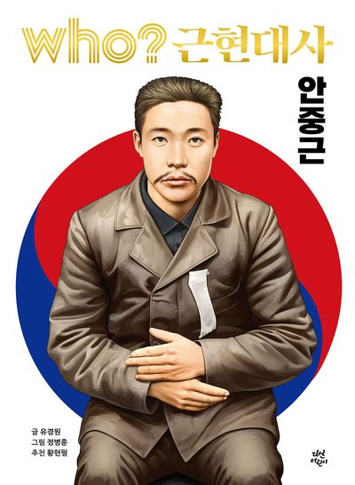

독립운동가이자 동양의 평화를 꿈꾸었던 인물

안중근 의사는 1879년에 태어나 1910년에 순국한 독립운동가이다.
그는 교육을 통한 계몽운동에 참여하고 이후 의병 활동에도 참여하였다. 이후 국권 회복을 위해 독립운동을 계속하였다.
안중근의 생애는 그가 직접 기록한 『안응칠역사』 를 통해서도 살펴볼 수 있다.
1909년 안중근을 비롯한 12명의 동지들은 단지동맹 을 결성하였다.
이들은 조국의 독립을 위해 생사를 함께하겠다는 뜻을 다지고 독립을 위한 투쟁을 이어가기로 맹세하였다.
1909년 10월 26일, 안중근은 만주 하얼빈역 에서 이토 히로부미를 저격하였다.
이토 히로부미가 하얼빈에 도착한 뒤 러시아 의장대의 사열을 받는 과정에서 안중근은 환영 인파 속에서 거사를 실행하였다.
거사 이후 안중근은 러시아군에 체포되었고, 이후 일본 측에 인도되어 뤼순감옥 에 수감되었다.
안중근은 뤼순감옥에 수감된 뒤 재판을 받았으며 사형을 선고받았다.
그는 옥중에서 자신의 생각과 생애를 기록하는 한편, 동양의 평화에 대한 자신의 구상도 글로 남겼다.
결국 1910년 3월 26일 뤼순감옥에서 순국하였다.
안중근은 옥중에서 『동양평화론』 을 집필하기 시작하였다.
『동양평화론』은 한국·중국·일본이 서로 협력하여 동양의 평화를 이루고 나아가 세계평화를 위해 노력해야 한다는 생각을 담고 있다.
안중근의 사상은 단순히 한국의 독립만을 생각하는 데 그치지 않고, 동아시아의 평화와 협력이라는 관점으로도 이어졌다.
안중근은 뤼순감옥에서 여러 글씨를 남겼으며, 이를 유묵 이라고 한다.
그의 유묵에는 나라와 평화, 책임과 관련된 생각이 담겨 있으며, 현재까지도 안중근 의사의 정신을 보여주는 중요한 자료로 평가된다.